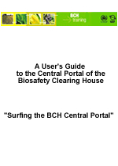

Descargar el manual completo en PDF
Este módulo describe las principales funcionalidades y la información que puede encontrarse en el Portal Central del CIISB. El usuario aprenderá:
- Cómo navegar en el Portal Central del CIISB.
- Para qué sirven las principales funcionalidades del CIISB.
- Qué información se puede encontrar en el Portal Central del CIISB.
- Cómo realizar búsquedas en las bases de datos disponibles en el Portal Central del CIISB.
Público:
El objetivo de este módulo es orientar a los usuarios del Centro de Intercambio de Información sobre Seguridad de la Biotecnología (CIISB). Está pensado para un público no técnico, con escaso o nulo conocimiento del Protocolo de Cartagena y del CIISB, pero que necesite entender los requisitos del Centro de Intercambio de Información sobre Seguridad de la Biotecnología.
Propósito:
Este módulo describe las principales funcionalidades y la información disponible en el Portal Central del CIISB. Los usuarios aprenderán cómo navegar el Portal Central del CIISB, conociendo:
-
La estructura de la información disponible en el Portal Central del CIISB;
-
Las distintas categorías de información que contiene el CIISB.
Tenga en cuenta que mientras los usuarios están conectados al Portal Central del CIISB (http://bch.cbd.int/) y ellos pueden leer las secciones de este módulo a medida que navegan por los distintos componentes del Portal Central del CIISB.